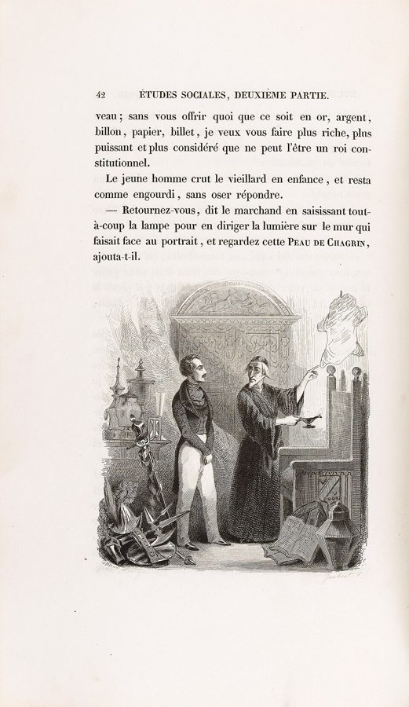
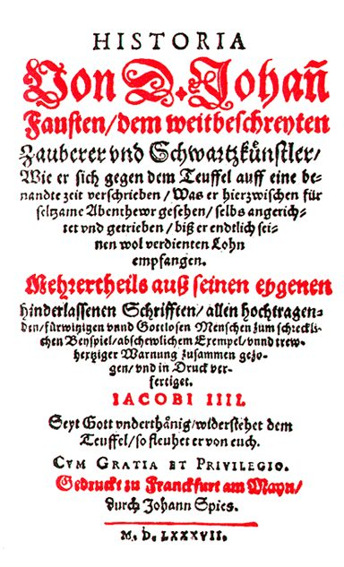
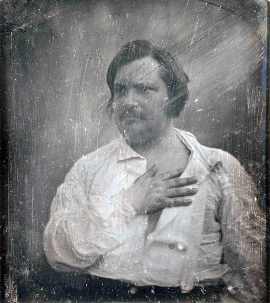
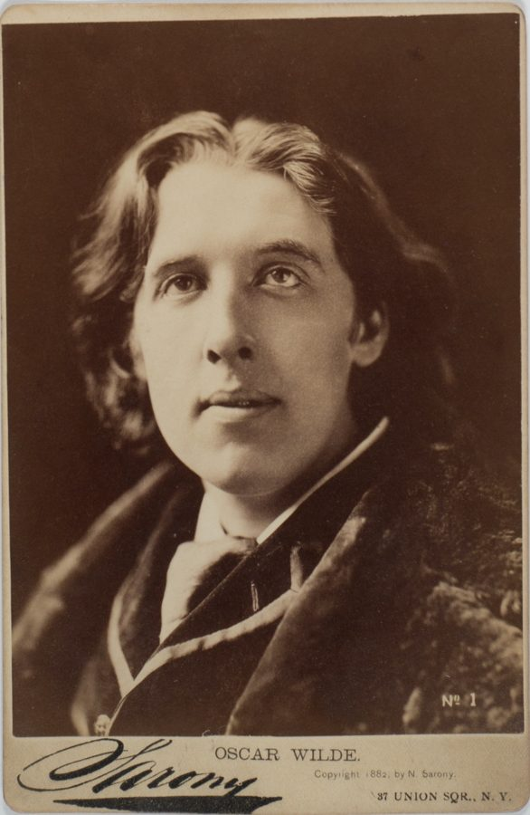
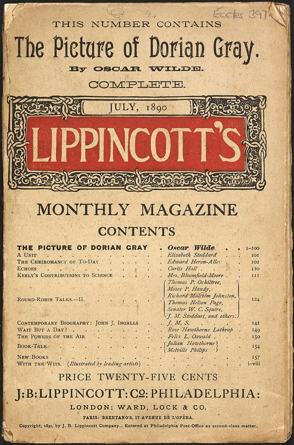

这一页在做什么
这一页两节，讲两位小说家。前一节是巴尔扎克：先讲《驴皮记》，一块每实现一个愿望就缩一点、主人的寿命也跟着缩的魔皮；再换到《三十岁的女人》和《婚姻生理学》，看小说家怎样给女人的年龄算账。后一节是王尔德：《道连·格雷的画像》里替人变老的画，和他入狱后写的《瑞丁监狱之歌》。读的时候抓两条线：作者怎样把《驴皮记》和《道连·格雷》归到浮士德故事一族，以及「生命时间」在每部作品里是怎样被计量、被花掉的。

1838 年版《驴皮记》的插图：老古董商举灯照着墙上的驴皮给拉斐尔看，上面的正文是老人说「回过头去，看看这块驴皮」那一句。Janet-Lange 画，Ferdinand Joubert 刻，Paris Musées，CC0，维基共享资源 读之前：这一页在全书的哪里
上一页讲了胡弗兰的长寿术、浮士德的赌约和返老还童，最后是席勒把艺术搬到时间之外。这一页接着浮士德往下走：作者说《驴皮记》是「一种」浮士德小说（第 108 段），《道连·格雷》是转了两三手的浮士德书（第 125 段）；古董商的「生命能量」，要照胡弗兰的思路读（第 117 段）。下一页回头谈早死的天才和长寿的作家。到了尾声，作者还会说「从巴尔扎克以来」四十岁不算老。
拿寿命去换愿望、拿灵魂去换青春，这笔账为什么总也算不过来？小说家又怎样凭一支笔，替一代人把「能写进小说的年龄」往后推了十年？
读的时候带着这几个问题。不用先找答案，读完回来对照「检查一下理解」。
拉斐尔有了驴皮，为什么从什么都想要，变成什么都不敢想？作者说这时他缺的东西变成了什么？§6
作者为什么说古董商的那几种「力」要照字面理解？这和第 2 章前面哪位医生的想法接得上？§6
作者批评《三十岁的女人》写得差，又说它值得称赞。夸的是什么？「延长」的是哪一段人生？§6
道连和画像怎样分摊时间？作者说时间这个主题到小说的哪一半才真正展开？§7
这一页的路线
两节各有一处花饰分隔，等于四段。第一段跟着《驴皮记》的情节走，到第 115 段作者说自己「漏了一面」，补上科学院，再回到古董店，把故事拉成一个关于生命能量的论断。第二段突然换书，从一部魔幻小说跳到一部写婚姻的小说，作者在第 120–122 段借《婚姻生理学》替巴尔扎克算年龄账，再回到小说女主角的一生。第三段讲《道连·格雷》，一边讲情节，一边给人物派浮士德剧里的角色。第四段跳到王尔德入狱，节奏放慢，读三段诗。读到第 118 段和第 135 段觉得「突然换了话题」，是原书的花饰分隔，作者没有写过渡。
§6 巴尔扎克（第 108–124 段）
§7 王尔德（第 125–141 段）
花饰
魔皮的约
越缩越小
科学院
三种力
三十岁的女人
婚姻生理学
朱丽的年龄
画像许愿
小说两半
浮士德的角色
画像毁掉
入狱
一天像一年
被绞死的人
本站示意图。橙点是作者归到「浮士德故事」的地方，蓝点是讲时间怎样被计量、被花掉的地方；折线是阅读顺序，虚线是原书的花饰分隔。 作者落在哪： 两部小说都是浮士德式的立约：拉斐尔拿寿命换愿望，道连拿灵魂换青春，到头来都赔上了命。作者照字面读巴尔扎克：生命能量用一点少一点。他也称赞小说家替女人把能写进小说的年龄推后了十年。
分节地图
这一页是原书第 2 章的第 6–7 节。粗体是这一节的主角；斜体是英文这一节开头的几个词，在电子书里搜它就能跳到那里；节里的转折用段号点出来。读完打个勾。
巴尔扎克：会缩的驴皮，三十岁的女人约 2900 词 In 1831, the same year that … 第 118 段起换到《三十岁的女人》，第 120–122 段是替巴尔扎克算的年龄账。 王尔德：替人变老的画像，瑞丁监狱约 1400 词 In his novel The Picture of … 第 125–134 段讲小说，第 135 段起是入狱和《瑞丁监狱之歌》。
先用中文过一遍：这一页的概念
作者常常一笔带过、默认你懂的概念，这里先从书外讲一遍：它从哪来，是什么意思。它在这一页起什么作用，看每块最后一句。讲过的概念都汇总在概念汇总 。
§6 浮士德故事 Faust-book（德文 Faustbuch） 16 世纪的德国确有一个叫浮士德的江湖术士，死后传说越来越多。1587 年法兰克福书商 Johann Spies 印了一本《浮士德博士的故事》，德国人管它叫「浮士德书」：浮士德和魔鬼立约，换来二十四年的知识和享乐，期满灵魂归魔鬼。故事的骨架是一份有期限的契约，拿灵魂或寿命去换愿望。此后英国的马洛写成戏，歌德写成《浮士德》，十九、二十世纪又有许多小说借这副骨架。说一部作品是「二级、三级」的浮士德书，意思是它不直接改写传说，而是从改写本再往下改。

1587 年《浮士德博士的故事》的书名页。从 Wie er sich 那一行起写着：他怎样把自己押给魔鬼，约定一段时间。Johann Spies，公有领域，维基共享资源 在这一页： 第 108 段说《驴皮记》是一部浮士德小说，第 125 段说《道连·格雷》是二三级的浮士德书，第 131、133 段给人物派角色。
§6 面相学 physiognomy 从一个人的脸、身形、举止读出性格的学问，古希腊就有。瑞士牧师 Lavater 在 1775–78 年出了四卷《面相学断片》，配大量肖像版画，在欧洲风行了几十年。巴尔扎克深受这类学说影响：他写人物常先写脸、身材、衣着和住处，相信外表记录着一个人的经历和欲望。今天面相学被看作伪科学，但它给十九世纪小说留下了一种写法：外貌是可以「读」的文本。
在这一页： 第 113 段拉斐尔的脸是「老人面具下年轻人的眼睛」；第 124 段说女人的面相要到三十岁才开始。
§7 唯美主义和花花公子 aestheticism, dandy 十九世纪后期英国的唯美主义运动，口号是「为艺术而艺术」：艺术不必有道德或实用的目的。Walter Pater 1873 年的《文艺复兴》劝人把生活过成一连串精致的感受，王尔德是这一派最有名的代言人，《道连·格雷》的序言以「一切艺术都毫无用处」收尾。花花公子（dandy）从摄政时期的 Brummell 算起，把衣着、谈吐、生活方式本身当作作品来经营。这里的「艺术」和技艺 正好相反：不是要花多年学的本事，而是一种姿态。
在这一页： 第 125 段说道连过的是伦敦花花公子的生活，第 132 段亨利勋爵说生活就是道连的艺术。
书里的人和作品
按在书里出现的顺序排，标题前是节号。作品只讲到读懂这一节需要的程度。
§6 巴尔扎克和《驴皮记》
巴尔扎克 Honoré de Balzac，1799–1850 法国小说家，把九十多部小说编成总题为《人间喜剧》的一个世界。这一页讲他的三本书。
《驴皮记》（La Peau de chagrin）1831 年出版，初版副题就叫「哲学小说」，后来归入《人间喜剧》的「哲理研究」。全书三部分：护身符、无情的女人、临终。第 109 段那位「无情的恋人」就是第二部分的 Fœdora。作者拿它来说明：生命时间可以像一块皮那样被量、被一点点用掉。第 115 段的科学院一段，作者说是自己前面漏讲的；小说扉页确实题献给天文学家 Félix Savary。

巴尔扎克，1842 年的银版照片。Louis-Auguste Bisson，公有领域，维基共享资源 §6 书里顺手提到的人第 108 段交代巴尔扎克从哪里知道《浮士德》，第 113 段拿莫里哀的两部戏作比，作者都没有介绍。
奈瓦尔 Gérard de Nerval，1808–1855 法国诗人，二十岁前后把《浮士德》第一部译成法文。书里说巴尔扎克读的就是这个译本。
斯塔尔夫人 Germaine de Staël，1766–1817 法国女作家，《论德国》（De l'Allemagne）把德国文学介绍给法国读者，其中详细讨论了《浮士德》。
莫里哀的两部戏 Le Misanthrope 1666，L'Avare 1668 《恨世者》的主角厌恶社交、躲开人群；《悭吝人》的主角把钱看得比什么都重。作者说拉斐尔对自己的寿命兼有这两副样子。
§6 《三十岁的女人》和《婚姻生理学》《三十岁的女人》（La Femme de trente ans）是巴尔扎克把几篇先后发表的中短篇拼起来、1842 年定稿的长篇，主角朱丽从十几岁写到五十岁。《婚姻生理学》是一本半戏谑的「论著」，书名和 Brillat-Savarin 1825 年的《味觉生理学》同一路；1840 年前后巴黎又流行起一大批「某某生理学」的小册子。书里说它 1831 年出版、作者当时三十一岁；一般记作 1829 年 12 月匿名出版（书名页印 1830 年），巴尔扎克那年三十岁。作者拿这两本书来看：一个人能写进小说的那段人生有多长，是可以重新算的。
三十岁门槛
推到四十
从前的女主角：二十到三十
巴尔扎克的朱丽：多给十年
结婚
亚瑟
五十，耳背
男人：多十五年（示意）
14
20
30
40
50
60 岁
本站示意图，按第 121–123 段的数字画。蓝条是旧算法里女人能写进小说的十年，橙条是巴尔扎克给朱丽多加的十年；男人那一条只按《婚姻生理学》的「差十五年」示意。 §7 王尔德和《道连·格雷的画像》
王尔德 Oscar Wilde，1854–1900 爱尔兰出生的作家，以剧本、童话和机智的警句出名，唯美主义的代言人。1895 年入狱，出狱后流亡法国，死在巴黎。
《道连·格雷的画像》先在 1890 年 7 月的美国《利平科特月刊》上登了十三章的版本，1891 年出书时扩成二十章，加了序言。第 130 段说的第 1–10 章、第 11 章、第 11–20 章，按的是 1891 年的版本。作者拿它来说明：浮士德和时间立的约还能换个样子，这回替人变老的是一幅画。书里说西比尔是「舞女」，小说里她其实是演莎剧的女演员；詹姆斯·韦恩在小说里是打猎时被人误射死的。

王尔德，1882 年在纽约 Sarony 照相馆拍的照片。Napoleon Sarony，公有领域，维基共享资源 
1890 年 7 月号《利平科特月刊》的封面，这一期登了《道连·格雷的画像》的第一个版本。作者不详，公有领域，维基共享资源
§7 作者派的角色第 131、133 段作者把《道连·格雷》的人物和《浮士德》第一部对上号：道连是（年轻的）浮士德，亨利勋爵是魔鬼梅菲斯特，西比尔·韦恩是被浮士德抛弃的格蕾琴，她的哥哥詹姆斯是替妹妹报仇的瓦伦丁。在歌德的剧里，瓦伦丁死在浮士德的剑下；在这部小说里，复仇的哥哥也死了。画家和画像，作者没有派角色。浮士德的剧情见上一页 。
§7 《瑞丁监狱之歌》王尔德 1895 年因「严重猥亵」罪被判两年苦役，大部分刑期在瑞丁监狱服完。狱中写给 Alfred Douglas 的长信，后来以《自深深处》（De Profundis）为题出版。《瑞丁监狱之歌》却是 1897 年出狱以后在法国写的，1898 年署狱中编号「C.3.3.」出版；书里第 135 段说两部作品都写于狱中，后者不对。诗前题献给 C.T.W.，就是 1896 年 7 月在瑞丁被绞死的骑兵 Charles Thomas Wooldridge，他杀了自己的妻子。全诗分六部分。
瑞丁监狱里王尔德住过的牢房，2016 年拍摄。Jack1956，CC0，维基共享资源
图里的引文
下面这几段在你的电子书里是图片，长按查不了词，也搜不到。每块先说它在屏幕上的位置，再逐行给中文意思；行首的斜体是图里这一行开头的几个词，用来和图对上。这一页的诗是王尔德用英文写的原作，直接逐行给意思。
§7 第 137 段 · 王尔德《瑞丁监狱之歌》第五部分第一节的后两行 · 英文原作在第 136 段末尾（…makes time unbearably long:）之后。
And that each … 而且每一天都像一年，A year whose … 一年里的每一天又都那么长。
大意： 这一节前四行说：狱里的人不知道法律是对是错，只知道墙是结实的。开头的 And that 接的就是「只知道」。
§7 第 139 段 · 王尔德《瑞丁监狱之歌》第一部分第六节末两行和第七节头两行 · 英文原作在第 138 段末尾（…go on living unpunished:）之后。
The man had killed … 这个人杀了他所爱的，And so he … 所以他非死不可。Yet each man kills … 可是人人都在杀害自己所爱的，By each let … 这句话，要让每个人都听见。
大意： 书里把两节接成一段。前两行在第六部分（全诗最后一部分）又出现一次，后面接的是 And all men kill the thing they love 那一节。the thing he loved 指他的妻子。
By each let this be heard
第 4 行
让每个人都听见这句话
诗里的倒装：正常语序是 let this be heard by each。each 承上一行的 each man。
§7 第 141 段 · 王尔德《瑞丁监狱之歌》第三部分最后两行 · 英文原作在第 140 段末尾（…closing lines of the ballad suggest:）之后。
For he who … 因为一个活了不止一辈子的人，More deaths than … 也就得死不止一回。
大意： 作者说这是全诗的结尾，其实是第三部分的结尾；全诗收在第六部分。注 51 说引文出自第三、五部分，上一块却出自第一部分。
lives more lives than one
第 1 行
活了不止一种人生
第 140 段作者这样读：王尔德陪着死囚把那人的一生和死都经历了一遍。
词与短语
你用 Kindle，单个生词长按就能查，这里只收词典帮不上的：每个词都认识、合起来不懂的说法，学术腔，没翻译的外文，典故。斜体小字是原句里连续的几个词，错字照电子书原样，搜它就能跳到那里。图里的词在上面「图里的引文」里。
§6 巴尔扎克：会缩的驴皮，三十岁的女人
put his seal on
… and put his seal on the manuscript, …
（在手稿上）加了封
put one's seal on 平常多是比喻「定下来、认可」，这里是字面：歌德把《浮士德》第二部的手稿封起来，留到身后发表。
philosophical novel
… Balzac called it in his subtitle-shortly before …
哲学小说
1831 年初版的副题 roman philosophique。subtitle-shortly 中间原是破折号，前后是一段插入语。
a few more hours of life-time
… only a few more hours of life-time …
再活几个钟头
life-time 中间带连字符，是全书的术语「生命时间」，见
生命时间 。这一节里它反复出现：驴皮缩掉的正是它。
world-weariness
… Raphael, in his world-weariness, hears only …
厌世，对什么都提不起劲
浪漫派时代的典型情绪，德文常说 Weltschmerz（世界之痛）。第 111 段又说 world-weary state。
chagrin
… only the word chagrin (grief), which …
（法文）忧伤；也是一种粒面皮革
英文的 chagrin 是「懊恼」，这里是法文。两个意思是同形的两个词，皮革那个英文叫 shagreen。注 40 的译者注说 chagrin 兼指野驴和忧伤，书名的双关就在这里：一块会缩的皮，也是越来越多的愁。
smack in the middle of
… here we are smack in the …
正正落在……当中
smack 作副词，口语「不偏不倚地」。作者插一句话打趣：会实现愿望的护身符，正是浪漫派最爱用的道具。
Mephistophelean
… a mysterious power whose Mephistophelean nature …
梅菲斯特式的，魔鬼一般的
梅菲斯特是《浮士德》里的魔鬼。前面加了引号的 pact（法文 pacte）也是浮士德故事的词：和魔鬼立的约。
retarde
… can be postponed (retarde) for a time.
（法文 retardé）推迟
电子书丢了重音符号。作者特意给出法文，可以留意它和第 114 段的 retarding moment、第 2 章第 3 节胡弗兰的 retardation 同根。
cannot touch him
… are his enemies cannot touch him.
奈何不了他
touch 在这里是「伤到、动得了」，不是「碰到」。
phantasmagoria
… read as a Romantic phantasmagoria, develops …
光怪陆离的幻景
原指十八、十九世纪之交流行的幻灯鬼影秀。作者说小说前半像一场浪漫派的幻灯戏，后半才变成认真的人物研究。
this plunge into awareness
With this plunge into awareness, Balzac …
这一下猛然醒悟
plunge 是一头扎进去。不是慢慢意识到，而是一下子掉进清醒里，指拉斐尔看清驴皮已经缩得多小的那一刻。
time-miser
… before us a time-miser who hates …
时间的守财奴
miser 是吝啬鬼。注 43 给了它在法文本里的页码，是从小说里借来的说法。拉斐尔不是省钱，是省愿望，因为每个愿望都要花掉寿命。
Moliere's Misanthrope and Avare
… both Moliere's Misanthrope and Avare, for …
（书名）莫里哀的《恨世者》和《悭吝人》
屏幕上没有斜体，这是两部剧名。见「书里的人和作品」。
retarding moment
… Balzac's kind retarding moment will have …
延宕的一笔
叙事学用语：让情节在结局前慢下来、拖一拖的环节；歌德和席勒 1797 年通信谈史诗时讨论过这种「延宕」。kind 是作者的俏皮话：这次的延宕是善意的，爱情送上门来，用不着许愿。
(or the illusion)
… with the experience (or the illusion) of …
（也许只是幻觉）
括号里是作者的保留：拉斐尔和浮士德到底有没有真得到那个幸福的顶点，作者不替他们下结论。参见上一页的
瞬间 。
quod erat demonstrandum
… antique handler-quod erat demonstrandum.
（拉丁文）证毕
几何证明末尾的套话，缩写 Q.E.D.。作者半开玩笑：一百零二岁、还很硬朗的古董商本人，就是这条长寿定理的证明。
must be taken literally
… must be taken literally. Like Hufeland, …
要照字面理解
不是比喻。作者说巴尔扎克真相信人身上有定量的生命能量，像燃料一样会烧完，这和胡弗兰的
长寿术 是一路想法。
energy budget
… to manage our energy budget more sparingly.
能量的收支
budget 是预算。作者有意用记账的词，接上全书「时间经济」的线。
distribute praise and blame
… to distribute praise and blame to …
论功过、打分数
整句是反事实的假设：「假如文学批评的头等任务是论功过……」，言下之意它不是。作者先替这部小说挨骂，再说它为什么值得读。
cobbled together
… it was cobbled together, in a …
七拼八凑起来的
cobble 原是补鞋，引申为草草拼成。
pensee
… central idea (Balzac: pensee). However, …
（法文 pensée）思想、中心意念
作者给出巴尔扎克自己的用词：这部小说靠的是一个念头，不是结构。
just as Marx discovered the proletariat
… just as Marx discovered the proletariat.
就像马克思发现了无产阶级
这是批评家 Pierre Barbéris 的比喻，不是作者的话：一个社会类型被一部书「发现」出来。
at the ripe old age of thirty-one
… at the ripe old age of thirty-one …
「高龄」三十一岁
反话。ripe old age 本指长寿的高龄，用在三十一岁的人身上是取笑：这么年轻就以女性行家自居。一般记载巴尔扎克那年其实三十岁，见「书里的人和作品」。
moralist
… witty aphorisms of a moralist (historien …
（法国文学里的）人性观察家，格言作家
不是「道学家」。法国传统里的 moraliste 指拉罗什福科那样观察世态人心、写格言的人。括号里的 historien des moeurs 是「风俗史家」，巴尔扎克后来在《人间喜剧》前言里说自己只是法国社会的书记。
A respectable woman is less than forty years old
One of these aphorisms goes like this:
体面的女人不到四十岁
法文 honnête 在这里是「规矩、有身份」，指社交场上名声好的已婚女人，不是「诚实」。作者说先不评，到第 122 段才接上：巴尔扎克给朱丽的缓期正好到四十岁。
at Balzac's instigation
… more precisely, at Balzac's instigation, the age …
照巴尔扎克的提示
instigation 平常是贬义的「唆使、煽动」，这里作者故意用重词，意思只是「跟着巴尔扎克的思路」。
within the bounds set by mores
… within the bounds set by mores and …
在风俗允许的范围内
mores 是拉丁文 mos（习俗）的复数，指一个社会默认的规矩，读作两个音节。
in almost bookkeeping terms
… in almost bookkeeping terms:
几乎像记账一样
作者点出巴尔扎克在给人生算账，十五年的差额像账本上的数字。
summarily dismantles the barrier
… he summarily dismantles the barrier and …
干脆把这道关卡拆了
summarily 是「不经商量、立即」，法律上说即决。小说家一句话，三十岁的门槛就不算数了。
a ten-year reprieve
… grants her a ten-year reprieve-that is …
缓期十年
reprieve 原是死刑犯的「暂缓执行」。作者用期限的词：三十岁是到期日，巴尔扎克给朱丽批了十年缓期。第 9 章会大讲这类延期。
see above
… that is (see above), until …
见前文
指第 120 段那句「体面的女人不到四十岁」，作者在那里说先不评，到这里才接上。
acrobatic circumstances
… under such acrobatic circumstances that he …
（躲藏得）像在耍杂技
作者把一场悲剧讲得带点调侃：情人为了保住女方名声，躲藏的方式过于惊险，结果送了命。
read like a book
… can be read like a book-at …
像书一样可以读
read someone like a book 是成语「把某人看透」。这里一语双关：面孔真成了一本书，读它的是小说家。
ahead of him by one love
… who is ahead of him by one …
比他多爱过一回
把恋爱经历当成计量单位，像赛跑领先一圈。作者接着说，这一场的差距几乎是无限远。
… made from the hide of a wild ass (onager).4° 末尾的 4° 是注号 40。第 111、124 段末的 4'、4$ 也是注号（41、48）。(La femme de trente ans).¢6 ¢6 是注号 46。(Physiologie du manage) 应为 Physiologie du mariage（婚姻生理学）。la rapide saison on la femme 法文的 on 应为 où（在那个时节里）。
§7 王尔德：替人变老的画像，瑞丁监狱
Fin de siecle
… mood of the Fin de siecle, …
（法文 fin de siècle）世纪末
专指十九世纪最后十几年那种颓废、唯美、末日将至的气氛。
not entirely unlike
This novel, not entirely unlike the one …
和……有几分相似
双重否定，语气留了余地：不是说一样，只是说有相通之处。
a second- or third-degree Faust-book
… is a second- or third-degree Faust-book, …
转了两三手的浮士德书
degree 是「级」，像亲属的几等亲。见概念块「浮士德故事」。
Your days are your sonnets
… radiant youth and irresistible beauty:
你的每一天都是一首十四行诗
节名 Every Day Is a Sonnet 从这句来。作者把它放在故事开头讲，小说里这句在第 19 章，和第 132 段的 Life has been your art 是亨利勋爵同一段话。
plants a thorn in
… this seducer plants a thorn in …
在……心里扎下一根刺
种下一个挥不去的忧虑。下一句就是这根刺：美能抵抗时间多久？
a Narcissus
… suddenly becomes a Narcissus more in …
一个那喀索斯，自恋的人
奥维德《变形记》第三卷：美少年那喀索斯爱上自己的倒影，憔悴而死，化成水仙。作者说道连比他还自恋。
trompe-l'oeil
… as the trompe-l'oeil pictures of the …
（法文）以假乱真的错视画
字面是「骗眼睛」。古希腊画家宙克西斯据说画的葡萄引得鸟来啄，故事见老普林尼《博物志》。
a kind of scapegoat
… like a kind of scapegoat, all …
替罪羊
典出《利未记》第 16 章：大祭司把众人的罪归到一只山羊头上，放进旷野。画像就这样替道连背走了时间和罪。
thematics
… the thematics of morality is in …
（一部作品里的）主题群
学术腔，不是一门「主题学」。the thematics of time 就是「时间这一组主题」。
registers his guilt only as
… registers his guilt only as a …
只把自己的罪当作……
register 在这里是「察觉到、记下」，道连对罪的反应只是看见画上多了一块污点。
what difference does that make
… One more death-what difference does that …
又有什么两样
这半句是作者模仿道连的心声，不是小说原文。death-what 中间原是破折号。
careless oblivion
… the maxim of careless oblivion he …
满不在乎的遗忘
careless 是「无忧无虑、不当回事」。What is past, is past 在小说里是道连在第 9 章对画家说的，作者说是从亨利勋爵那里学来的处世格言。
equates art and life
… amoral aesthetics that equates art and life;
把艺术和生活画上等号
amoral 是「不讲道德的」（和道德无关），不同于 immoral「不道德的」。见概念块「唯美主义」。
on the trail of
… Vane is still on the trail of …
一直在追查
trail 是猎物留下的踪迹。
the full measure of evil deeds
Now the full measure of evil deeds …
恶贯满盈
measure 是量器。fill up the measure 出自《马太福音》第 23 章，把罪恶装满一斗。
Reading Gaol
… while he was in Reading Gaol …
瑞丁监狱
gaol 是 jail 的英国旧拼法，读音相同。Reading 是伦敦西边的城镇，读 /ˈrɛdɪŋ/，和「阅读」无关。
the memorable closing lines
… as the memorable closing lines of …
令人难忘的结尾几行
作者说是全诗的结尾，其实是第三部分的结尾，见「图里的引文」。
… so many years before.5° 末尾的 5° 是注号 50。These are his autobiographical De pro fundis 应为 De profundis（《自深深处》），拉丁文「从深处」，出自《诗篇》第 130 篇的头一句。
读完：作者到底说了什么
读完这一页的几节再看。下面是作者在这几节里的论点，由本站按论点重新组织，不按原书的顺序；每条右上角是依据所在的段落，拿不准就回书里那几段再读一遍。
这两部小说是浮士德故事的变形 拉斐尔读过《浮士德》，用驴皮换愿望，就是和魔性的力量立约；结尾和歌德的剧一样，幸福的顶点和死同时到来，作者加了一句「或者只是幻觉」。《道连·格雷》是转了两三手的浮士德书，把和时间立约这件事推向新的方向（§7 第 125、131 段）。
§6 第 108–114 段 生命能量用一点少一点，这要照字面读 古董商说意志和权力都在烧掉生命，只有知识能护住它。作者说这代表巴尔扎克本人的看法，要照字面理解：和胡弗兰一样，相信每人有一份定量的生命能量。一百零二岁的古董商，就是半开玩笑的「证明」。
§6 第 116–117 段 能决定寿命的人，缺的就从时间变成了生活 拉斐尔起初以为能随意决定余生长短；一看清驴皮缩了多少，就只剩下守住寿命一个念头，什么都不敢想。作者的判断是：他对生命时间的短缺，最终变成了生活质量的短缺。
§6 第 113 段 一部写得差的小说，替女人多争了至少十年 作者说照诗学的规矩，《三十岁的女人》结构很差、写得也草；但它值得称赞，因为它把一代女人原本短促的人生，至少延长了整整十年。这「人生」是能写进小说的爱情生活：三十岁的门槛被巴尔扎克推到四十。
§6 第 118–122 段 王尔德笔下，时间从画像转到了牢房 小说里画像替道连承受时间的痕迹，作者说时间的主题到后半部才真正展开。到了狱中，时间变得长得难以忍受；作者说那个被绞死的人是王尔德自己的映像，王尔德陪他活了一遍，也死了一遍。
§7 第 129–140 段
合起来： 延长生命这条路，在小说里变成和时间的交易：拿寿命换愿望、拿灵魂换青春，到头来都赔上了命。另一面，小说家也能重新划定人生的哪一段「算数」。时间有多短，一半看怎么算。
值得停下来的句子
Here the hero's shortage of life-time has definitively passed over into a shortage in quality of life.— §6 第 113 段。本站译：到了这里，主人公在生命时间上的短缺，彻底变成了生活质量上的短缺。
主干是 shortage … passed over into a shortage：同一个词用两次，前面缺的是量（life-time），后面缺的是质（quality of life）。definitively 是「已成定局」，回不去了。作者在这里把一个魔幻故事落到全书的线上：时间一旦被当成要省的东西，省下来的寿命也就不值得过了。
Balzac the novelist should be praised for having … lengthened the previously short life of a whole generation of women by at least a full decade.— §6 第 119 段。本站译：小说家巴尔扎克值得称赞，因为他把一代女人原本短促的人生，至少延长了整整十年。
省略号处原文是 with this work。the previously short life 里的 previously 很要紧：短是从前的算法造成的。by at least a full decade 有两个加重的词，at least 和 full，作者是在真心称赞，不是反话。前一段他刚说过这部小说写得差，两层判断要一起读。
检查一下理解
先在心里答，再点开。答错的那题，回书里把对应那一节再读一遍。
1.（§6）作者凭什么说《驴皮记》是一部浮士德小说？ 巴尔扎克读过《浮士德》的法译本，小说主角拉斐尔也读过，还怕落到浮士德的下场；他拿到驴皮，就是和一种魔鬼般的力量立了约。结尾和歌德的剧一样，最高的幸福和死同时到来。
2.（§6）驴皮的魔力有什么代价？拉斐尔后来为什么变成「时间的守财奴」？ 每实现一个愿望，皮就缩一点，主人的寿命也缩短相应的一截。他看清皮已经很小以后，只想不再许愿，躲开人群、什么都不敢要，像莫里哀笔下的恨世者兼吝啬鬼。
3.（§6）古董商说的三种力是什么？作者为什么要读者照字面理解？ 意志和权力消耗生命，知识保护生命。作者说巴尔扎克和胡弗兰一样，真相信人有一份定量的生命能量会被「烧」掉，这不是修辞；活到一百零二岁的古董商就是例子。
4.（§6）巴尔扎克给朱丽「多给的十年」是从哪里算到哪里？男人呢？ 旧算法里女人二十岁结婚，到三十岁这十年才是能写进小说的年月；巴尔扎克让朱丽过了三十岁才成为真正有意思的人物，门槛推到四十。《婚姻生理学》说，男人的爱情生活比女人长十五年。
5.（§7）作者给《道连·格雷》的人物派了哪些浮士德剧里的角色？ 道连是年轻的浮士德，亨利勋爵是魔鬼，西比尔·韦恩是格蕾琴，她的哥哥詹姆斯是瓦伦丁。
6.（§7）作者说这部小说分成哪两部分？时间的主题在哪一部分？ 第 1–10 章和第 11–20 章，中间第 11 章用快进的写法跳过十八年。前半部以道德为主题，时间的主题到后半部才完全展开。
7.（§7）《瑞丁监狱之歌》在这一节里起什么作用？ 它先说明单调的监禁让每一天长得像一年；再写一个被绞死的同狱犯人，作者说王尔德把这人看成自己的映像，陪他活了一回，也死了一回。
用一句话说这一页，写给一个没读过的人。
想一想：如果你也有一张驴皮，每做一件想做的事，寿命就短一截，你会像拉斐尔那样什么都不敢想，还是挑几件最想做的事去换？反过来，生活里有没有一道像「三十岁门槛」那样的年龄线，你一直默认它，其实可以挪一挪？
精彩回顾
读过又忘了，从这里想起来。挑的是这一页最值得记住的人、说法和比喻，不按原书顺序；每条后面是节号，想细看就回书里那一节。全书各页的这一节都收在全书回顾 。
一句话： 巴尔扎克的驴皮和王尔德的画像，都是和时间立约的浮士德故事；巴尔扎克另一本小说，则替女人把能写进小说的年龄往后推了十年。
会缩的驴皮 每实现一个愿望，皮就缩一点，寿命也短一截。拉斐尔从什么都要，变成什么都不敢想：缺的从时间变成了生活。
§6 意志烧人，知识养人 古董商说意志和权力消耗生命，知识护住生命。作者说这要照字面读，和胡弗兰的生命力一个道理。
§6 三十岁推到四十 《三十岁的女人》写得差，却让女主角过了三十才真正有戏。作者称赞巴尔扎克替一代女人至少多争了十年。
§6 替人变老的画 道连许愿永远年轻，画像替他变老、替他记下每一桩罪。作者派角色：道连是浮士德，亨利勋爵是魔鬼。
§7 一天像一年 王尔德入狱后写《瑞丁监狱之歌》：狱中每天长得像一年；被绞死的同狱犯人，是诗人自己的影子。
§7